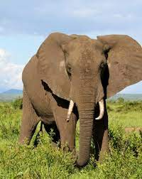

Wildlife traditionally refers to undomesticated animal species, but has come to include all organisms that grow or live wild in an area without being introduced by humans. Wildlife was also synonymous to game: those birds and mammals that were hunted for sport. Wildlife can be found in all ecosystems. Deserts, forests, rainforests, plains, grasslands, and other areas, including the most developed urban areas, all have distinct forms of wildlife. While the term in popular culture usually refers to animals that are untouched by human factors, most scientists agree that much wildlife is affected by human activities. Some wildlife threaten human safety, health, property, and quality of life . However, many wild animals, even the dangerous ones, have value to human beings. This value might be economic, educational, or emotional in nature.
Humans have historically tended to separate civilization from wildlife in a number of ways, including the legal, social, and moral senses. Some animals, however, have adapted to suburban environments. This includes such animals as domesticated cats, dogs, mice, and rats. Some religions declare certain animals to be sacred, and in modern times, concern for the natural environment has provoked activists to protest against the exploitation of wildlife for human benefit or entertainment.
 Global wildlife populations have decreased by 68% since 1970 as a result of human activity, particularly overconsumption, population growth and intensive farming, according to a 2020 World Wildlife Fund's Living Planet Report and the Zoological Society of London's Living Planet Index measure, which is further evidence that humans have unleashed a sixth mass extinction event.[3][4] According to CITES, it has been estimated that annually the international wildlife trade amounts to billions of dollars and it affects hundreds of millions of animal and plant specimen.Many nations have established their tourism sector around their natural wildlife. South Africa] has, for example, many opportunities for tourists to see the country's wildlife in its national parks, such as the Kruger Park. In India, the Periar Wildlife Sanctuary, Bandipur National Park and Mudumalai Wildlife Sanctuary are situated around and in forests. India is home to many national parks and wildlife sanctuaries showing the diversity of its wildlife, much of its unique fauna, and excels in the range. There are 89 national parks, 13 bio reserves and more than 400 wildlife sanctuaries across India which are the best places to go to see Bengal tigers, Asiatic lions, Indian elephants, Indian rhinoceroses, birds, and other wildlife which reflect the importance that the country places on nature and wildlife conservation